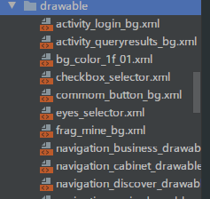
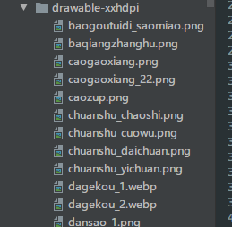
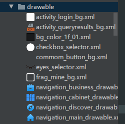
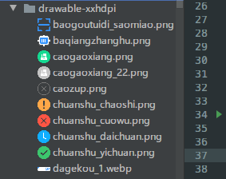

Android Drawable Preview是一个在安卓开发中非常有用的AS/IDEA插件,可以将drawable资源文件的icon替换成内容的预览图,达到不需要打开资源文件,快速预览内容的功能,实在是非常的方便快捷,让开发工作更加的愉悦.
使用之前:


使用之后:


便利程度自然不用多说,是我一直使用的重要插件之一.
可是好景不长,前几天AS4.1正式版发布了,虽然新功能我不一定都用到,但是就算为了intellij平台的更新,所以我向来都是用最新版AS的,升级后一些插件报错了:
1 | Plugin "Kotlin Code Sorter" is incompatible (supported only in IntelliJ IDEA). |
这是因为intellij平台更新了,对插件的配置有了一些要求,没有及时跟进升级的插件都会得到这个错误提示且不再兼容.查看Android Drawable Preview插件作者的GitHub上次更新已经是2年前,作者也不是很活跃,不知道什么时候才能更新,可是离开这个这个插件势必会影响到开发效率,又舍不得回退AS到4.0,恰好我也有一点点插件开发经验,于是fork仓库,对AS4.1版本进行了小小的适配.目前已经提交pull request到源仓库,如果原作者采纳的话,才会打包发布到jetbrains的插件仓库,AS上的老版本才能得到更新提示,如果现在就想用新版的话,可以在我fork的仓库进行下载后手动安装:
- 手动安装:
- 下载
最新发布的插件包> File >Preferences(Settings) > Plugins > Install plugin from disk...
- 下载
其他相同问题的插件
如果有其他插件也出现同样的问题,而作者还没有更新的话,可以尝试强行修改:
到
C:\Users\longforus\AppData\Roaming\Google\AndroidStudio4.1\plugins目录下找到对应插件的jar包.比如
C:\Users\longforus\AppData\Roaming\Google\AndroidStudio4.1\plugins\kotlincodesort\lib\kotlincodesort-1.2.2.jar(这个是比如哈,我的插件已经更新了的)用压缩软件打开.打开jar包内的
kotlincodesort-1.2.2.jar\META-INF\plugin.xml:1
2
3
4
5
6
7
8
9
10
11
12
13
14
15
16
17
18
19
20
21
22<idea-plugin>
<version>1.2.2</version>
<change-notes>
Adapter Android Studio 4.1
</change-notes>
<id>com.longforus.kotlincodesorter</id>
<name>Kotlin Code Sorter</name>
<vendor email="yxq.longforus@gmail.com" url="https://github.com/longforus">longforus</vendor>
<description>
......
</description>
<idea-version since-build="192"/>
<depends>org.jetbrains.kotlin</depends>
<depends>com.intellij.modules.platform</depends>//添加这一行
<extensions defaultExtensionNs="com.intellij">
<applicationConfigurable instance="com.longforus.kotlincodesorter.config.ConfigComponent"/>
</extensions>
<actions>
......
</actions>
</idea-plugin>保存,重启AS看是否能使用.这种方法只适用于不涉及API改变的情况,如果插件有使用已经删除的API等情况的话,用起来也会报错的,不能保证后续功能的正常使用,还是建议通知原作者更新.
我其他的小插件:
- MvpAutoCodePlus mvp模板代码生成 https://github.com/longforus/MvpAutoCodePlus
- Kotlin Code Sorter kotlin代码排序 https://github.com/longforus/KotlinCodeSorter
- adb-idea插件升级版 ADB IDEA插件增强版 https://blog.csdn.net/longforus/article/details/83046562
如果对你有用,欢迎star.
关于本文
本文作者 longforus，采用 CC BY-NC 4.0 许可协议。转载请注明出处。